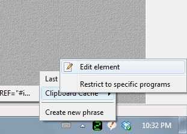
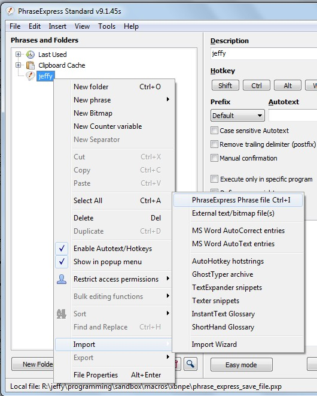
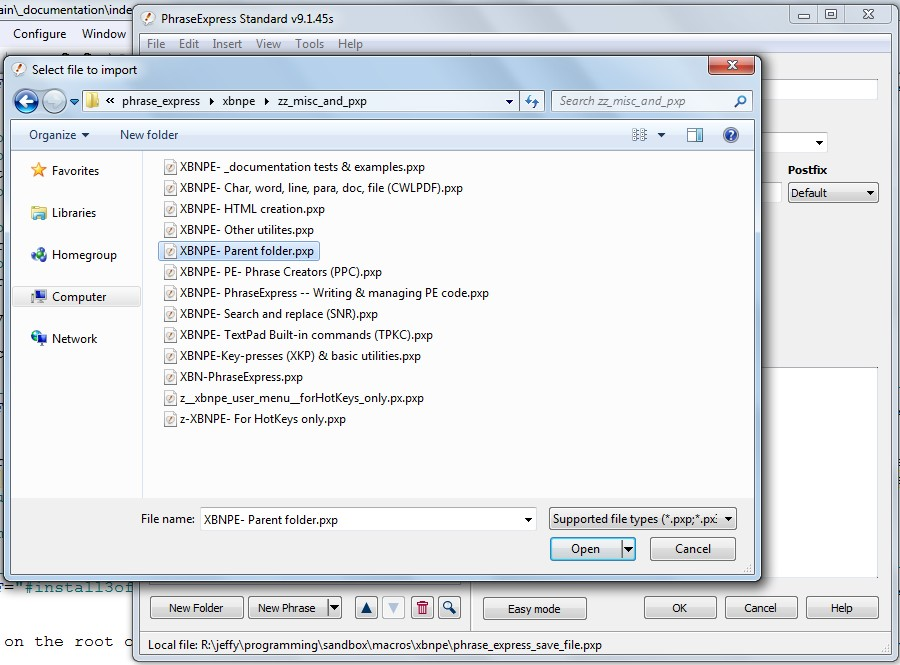
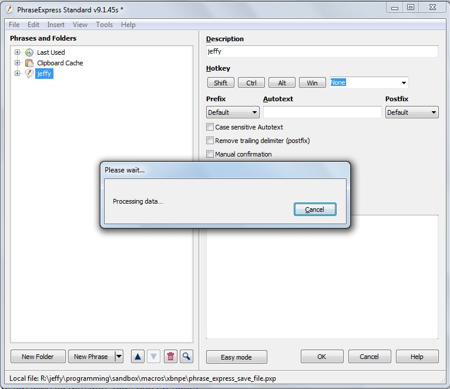

[BACK]
This documentation describes the specific steps necessary for installing XBN-PhraseExpress, up-through the XKP and TPKC projects, including "building" the TPKC-project.
Notes:
Microsoft Windows 7 Home Premium (32-bit)
Version 6.1.7601 Service Pack 1 Build 7601top [PREV -- NEXT] XBN-PhraseExpress installation: Step-by-step7.0.9 from textpad.com.7.*.*.Open TextPad and properly configure the Text Document Class, as required by XBN-PhraseExpress. The specific settings you make here are needed in a future step.
It is recommended that
TextPad > View > Status BarTextPad > Configure > Preferences > View > Line numbersTextPad > Configure > Preferences > View > Dockable log windows > Search Results
top [PREV -- NEXT] XBN-PhraseExpress installation: Step-by-stepv9.1.45s from phraseexpress.com.v9.*.*.It is recommended to configure drop-down-menu phrases (pop-up-heirarchies) in the same manner as presented throughout this documentation.
All XBNPE documentation expects that you are in PhraseExpress "Expert mode". If this button says "Easy mode", then you are indeed in expert-mode (the button is for switching back to easy mode). If it says "Expert mode", then click it.
top [PREV -- NEXT] XBN-PhraseExpress installation: Step-by-stepDownload XBN-PhraseExpress. Extract the download-archive into, for example:
C:\programming\phrase_express\
such that the root of the newly-extracted directory is
C:\programming\phrase_express\xbnpe\
Note that
C:\programming\phrase_express\
is called the XBNPE "parent" directory, and
C:\programming\phrase_express\xbnpe\
is called the XBNPE "main" directory.
These values are needed in a future step.
The source-code for XBN-PhraseExpress is now properly installed.
top [PREV -- NEXT] XBN-PhraseExpress installation: Step-by-stepOpen the PhraseExpress application by clicking on the red exclamation point (inside a white "speech bubble"), right-click on any item above "Create new phrase", then select "Edit element"

top [PREV -- NEXT] XBN-PhraseExpress installation: Step-by-stepRight-click on the root of your PhraseExpress heirachy (mine is "jeffy"), and select
Import > PhraseExpress phrase file

top [PREV -- NEXT] XBN-PhraseExpress installation: Step-by-stepNavigate to to your XBNPE installation parent directory, such as
C:\programming\phrase_express\
then into
xbnpe\zz_misc_and_pxp\
and select the XBN-PhraseExpress "parent" folder.

top [PREV -- NEXT] XBN-PhraseExpress installation: Step-by-stepOnce selected, the phrases will be imported.
